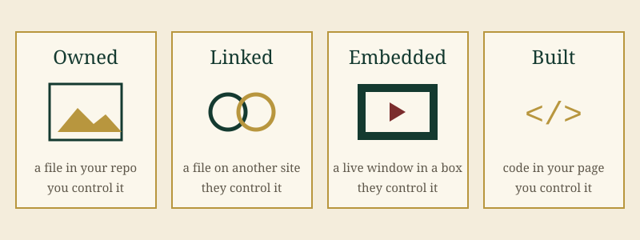

Start here
A page that breaks without telling you why
In HTML-2 you get a page where some pictures, links and videos work and others don't. The code looks almost the same, and one wrong letter is enough to break something. This site teaches you how each kind of embed works and how to find what's wrong.
By the end, you should be able to…
- Add an image, a YouTube video and a map or chart to a page with correct syntax.
- Make a picture jump to a section of the page.
- Explain who controls each piece: owned, linked, embedded or built.
- Find and fix broken file names, links, video addresses and embed code in the pencil editor.
- Read and change a small script, like a dark mode button.
How to use this site
- Read the guide. This page explains why embedding matters, shows live examples, and walks through each skill step by step.
- Listen. The Podcast explains the same ideas out loud, for when you'd rather hear it.
- Practice on real code. In Scenarios, you fix broken code in a live editor and see the result right away.
- See a finished example. My Gallery is a real page built by hand with every skill from this site. Look through it before you test yourself.
- Check yourself. The Quiz tests correct syntax and spotting errors.
- Track progress. My progress shows what to review.
Why embed?
Show, don't just tell
A picture or a short video can explain an idea faster than paragraphs of text. Visual media makes a page easier to understand at a glance.
Shortcuts that guide
Clickable images and "jump" links let visitors go straight to what interests them, so a long page still feels organized and easy to move around.
Tools that respond
Interactive embeds, like a map you can zoom or a chart you can hover over, turn a page into a tool that adapts to what each visitor needs.
Owned, linked, embedded, built
Everything on a web page gets there one of four ways. Ask each time: who controls it?

Owned
A file in your repo, like images/sunset.jpg. You control it. It only changes when you change it.
Linked
A file on someone else's site, pointed to by its full https:// address. They control it; if it moves, it breaks on your page.
Embedded
A live window into another service, like YouTube or Google Maps. It runs on their end, inside a box on your page.
Built
Code in your page that does something, like the dark mode button. You control it.
Live examples
Each of these is working on this page right now. The code that makes it work is underneath.
<img src="images/sunset.svg" width="400" height="260" alt="A simple sunset over hills">Click to jump: ← this small image is a jump link to the video below.
<a id="demo-video"></a>
<iframe width="560" height="315" src="https://www.youtube.com/embed/4L98ssI5Vxw" title="YouTube video player" allowfullscreen></iframe><iframe src="https://www.google.com/maps/embed?pb=..." width="600" height="450" style="border:0;" allowfullscreen="" loading="lazy" referrerpolicy="strict-origin-when-cross-origin"></iframe>Try zooming and dragging. That's the "interactive" part, and it runs on Google's side.
var lightColor = "#F4EDDC";
var darkColor = "#143A30";
var dark = false;
function paint() {
var box = document.getElementById("demo-box");
box.style.backgroundColor = dark ? lightColor : darkColor;
box.style.color = dark ? "black" : "white";
box.parentElement.style.backgroundColor = dark ? darkColor : lightColor;
}
function toggleDemo() { dark = !dark; paint(); }
paint();Step-by-step guides
Each guide covers the steps, the correct syntax, and how to spot errors in the pencil editor. Tap a guide to open it.
1 Add an image
An image is owned when the file lives in your repo, and linked when src points to a full web address on someone else's site.
Step by step
- Put the image file in your repo: on GitHub, Add file → Upload files, then commit.
- Write an
<img>tag whosesrcis the file name exactly, including any folder, capital letters and the extension. - Add
alttext that describes the picture, plus awidthandheight. - Commit, wait 1–2 minutes, and check the live page.
Correct syntax
Owned (a file in your repo)
<img src="images/sunset.jpg" width="400" height="300" alt="Sunset over the hills">Linked (a file on another site)
<img src="https://example.com/photos/sunset.jpg" width="400" height="300" alt="Sunset over the hills">- A broken-image icon means the
srcdoesn't match a real file. Open your repo's file list next to the code and compare them letter by letter. - Check capitals:
Sunset.jpgandsunset.jpgare different files on GitHub Pages. - Check the extension:
.jpg,.jpegand.pngare not interchangeable. - Check the folder: if the file is in
images/, thesrcmust start withimages/. - Check the quotes: every attribute value needs an opening and closing
". - A linked image can break later if the other site moves or deletes it. That's out of your control.
2 Make a picture jump to a section
A jump link has two halves: a link that says where to go, and a name tag at the destination. They must match exactly.
Step by step
- Right above the destination (for example a video), add an empty anchor with an
id:<a id="cooking-video"></a>. - Wrap the picture in a link whose
hrefis#plus that same id. - Make sure the closing
</a>comes after the<img>, so the picture is inside the link. - Add a "To top" link the same way:
<a id="top"></a>at the top,<a href="#top">at the bottom.
Correct syntax
The link (the picture you click)
<a href="#cooking-video"><img src="images/cooking.jpg" width="400" height="400" alt="Cooking show"></a>The destination (right above the video)
<a id="cooking-video"></a>- If clicking does nothing, compare the text after
#in thehrefwith theid. They must match letter for letter. - Look for small differences:
#cookingvideovscooking-video, or#Cookingvscooking. - The
#goes only in thehref, never in theid. - Each
idcan be used only once per page. - If the picture isn't clickable at all, check that the
<img>sits between<a href...>and</a>.
3 Embed a YouTube video
A video is embedded: a live window into YouTube, which runs on YouTube's side. YouTube has two kinds of links, and only one of them works inside an <iframe>.
Step by step
- On YouTube, click Share → Embed and copy the code. Or build it yourself from the video's ID, the letters after
watch?v=. - Use the embed address in
src:https://www.youtube.com/embed/VIDEO_ID. - Paste the whole
<iframe> … </iframe>where you want the video. - Commit, then press play on the live page.
Correct syntax
Watch link (for YouTube itself; won't play in an iframe)
https://www.youtube.com/watch?v=4L98ssI5VxwEmbed link (goes in the iframe)
<iframe width="560" height="315" src="https://www.youtube.com/embed/4L98ssI5Vxw" title="YouTube video player" allowfullscreen></iframe>Shorts work the same way
/shorts/VIDEO_ID becomes /embed/VIDEO_ID- If the video box is blank or says it refused to connect, the
srcis probably a watch link. Swapwatch?v=forembed/. - Compare the broken video's
srcwith a video that works on the same page. The difference is usually right there. youtu.be/IDand/shorts/IDlinks also need to become/embed/ID.- Copy the whole ID. YouTube IDs are 11 characters, and missing one breaks the video.
- "Video unavailable" means the owner blocked embedding. That's not your code: pick another video.
4 Embed a map or dashboard
Maps and charts are interactive embeds: viewers can zoom, pan or hover, and it all runs on the other company's site. You almost never write the iframe yourself. The site gives you the code.
Step by step
- Google Maps: search for a place, click Share → Embed a map → Copy HTML.
- Our World in Data: open a chart, click Share → Embed, copy the code.
- Paste the whole thing, from
<iframeto</iframe>, into the section where it belongs. - Change the section's heading to say what the map or chart shows. Commit and test zooming on the live page.
Correct syntax
What Google gives you (shortened here)
<iframe src="https://www.google.com/maps/embed?pb=..." width="600" height="450" style="border:0;" allowfullscreen="" loading="lazy" referrerpolicy="strict-origin-when-cross-origin"></iframe>- If you see a plain link instead of a map, you pasted the page address, not the embed code. The code must start with
<iframe. - If everything below the map disappears, the paste is incomplete: check for the closing
</iframe>and that no quote mark is missing. - Look for duplicate attributes, like two
width=values in one tag. The browser uses only the first, so the size may not be what you expect. - Make sure the iframe is inside the right section (between its opening and closing tags).
- For charts, use the archived embed version so it keeps working.
5 Make the page run a little code
A script is built content: code in your page that does something, like a dark mode button. The HTML-2 script has five parts.
Step by step
- Two colors:
lightColoranddarkColor. These are the lines you change. - A memory:
darkisfalse(light mode) ortrue(dark mode). paint()colors the page one color and the embed block the other.toggleDark()runs on every click: it flipsdark, then callspaint().- One last
paint()colors the page when it first loads.
Correct syntax
The button
<button onclick="toggleDark()">Dark mode on / off</button>The colors you change
var lightColor = "#F4EDDC";
var darkColor = "#143A30";Finding the block it recolors
var block = document.getElementById("embed-block");
<!-- must match: -->
<section id="embed-block">- If the button does nothing, compare the name in
onclick="..."with the function name.toggleDark()andtoggledark()are different. - The text in
getElementById("...")must match anidon the page exactly. - Colors need quotes and a
#:"#143A30". - Pick two colors far apart (one light, one dark) so the text stays readable in both modes.
- Test both modes before you submit: click the button twice.